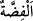
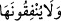
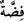

çevirirler.
“Altın ve gümüşü biriktirip de” yani onları toplayıp gömü olarak veya bir başka
şekilde muhafaza edenler.
Arap dilinde “kenz”, toplamak, bir araya getirmek mânâsına gelir. Parçaları bir araya
getirilen her şeye meknûz (toplanmış, biriktirilmiş) denilir.
Elden çıkıp gittiği ve kalıcı olmadığı için Arapça’da Altına “
” adı verilmiştir.
Gümüşe ise dağıldığı ve elde kalıcı olmadığı için “
” ismi verilmiştir. Altın ve
gümüşün fânî olduğunu göstermek için sana onların isimlerinin mânâsını bilmek
yeterlidir. Çünkü onlar gelip geçicidir.
Anlatılır ki, Âdem (a.s.) cennetten çıkınca cennetteki her şey onun için ağlamıştır.
Ancak öd ağacı, altın ve gümüş ağlamamıştır. Bunun üzerine Allah Teâlâ onlara:
“Şayet kalplerinizde şefkat ve merhamet olsaydı, benim korkumdan ağlardınız. Lakin
taş yürekli olanı ateşle yakacağım. İzzetim ve Celalim hakkı için (ey altın ve gümüş!)
Sizden yüzük, dinar, dirhem veya bilezik yapılırken ateşte yanacaksınız. Sen ey öd
ağacı! Kıyamete kadar devamlı ateş ve üzüntü içerisinde kalacaksın.” buyurmuştur.
“Altın ve gümüşü biriktirenler” ifâdesi, altın ve gümüşü biriktirip onları Allah
yolunda infak etmeyen haham ve rahipleri içine aldığı gibi aynı davranışta bulunan
müslümanlara da şâmildir.
“onları” yani onlardan bir bölümünü “Allah yolunda harcamayanlar” onların
zekatını vermeyenler, onlardan Allah’ın hakkını çıkarmayanlar “var ya,”
Bu cümledeki “-den, -dan, bir bölümü” manâsına gelen “ ” edatı, hazfedilmiştir ve
orada gizli olarak bulunduğu murad edilmiştir. Allah Teâlâ’nın: “Onların mallarından
sadaka (zekat) al!” (et-Tevbe, 9/103) meâlinde bu surede geçen âyeti, bunun delilidir.
Ayrıca Peygamber (a.s.) şöyle buyurmuştur: “(Zekat), ikiyüz dirhem gümüşte beş
dirhem, yirmi miskal altında ise yarım miskal (olarak verilir).”[130] Şayet malın
tamamını infak etmek gerekli olsaydı, böyle bir takdirin mânâsı olmazdı. Haddâdî’nin
tefsirinde böyle geçmektedir.
Âyette iki şey (altın ve gümüş) zikredildiği halde “
” lafzındaki zamir, çoğula
delâlet edecek şekilde getirilmiştir. Çünkü altın ve gümüşle çok miktarda dinar ve
dirhem kastedilmiştir. Bu zamirin âyette geçen veya işaret edilen mallara ve hazînelere
âit olduğu da söylenmiştir. Bazıları da bu zamirin kendisine en yakın olan “
” yani
gümüş kelimesine râci olduğunu belirtmişlerdir. Bu durumda bunlardan birisi diğeri ile
bilindiği için ikisinden birisinin zikriyle yetinilmiştir. Şu âyette de aynı durum söz
konusudur: “Bir ticaret veya eğlence gördükleri zaman hemen dağılıp ona giderler.”
(el-Cumua, 62/11)